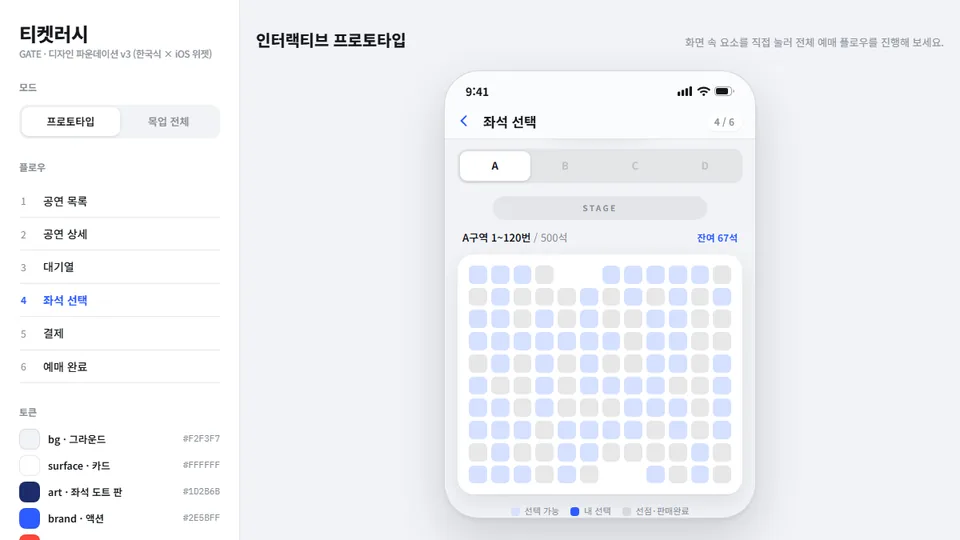
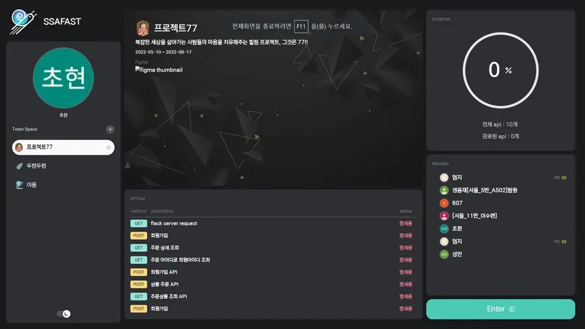
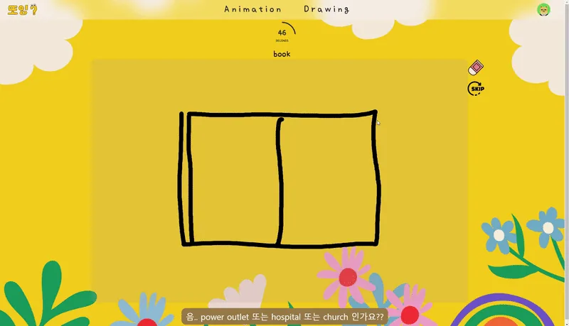
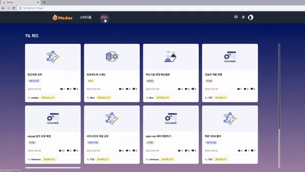

요구사항 정리부터 배포 후 확인까지 한 기능을 끝까지 맡아 왔습니다.
웹 개발자
유한책임회사 티지나래
2024.06 ~ 재직 중
60s→63~69ms
60초 안에 끝나지 않던 조회
교육용 단말 운영 시스템(TSMS)
300~400건
첨부파일 압축을 진행 상태가 보이는 작업으로
B2B 협력사 포털(PPS)
30건 테스트
서버 2대에서 똑같이 걸리는 요청 제한
B2B 협력사 포털(PPS)
2024.06 ~ 재직 중
유한책임회사 티지나래
B2B 협력사 포털 PPS와 교육용 단말 운영 시스템 TSMS에서 요구사항 협의, 화면·서버·DB 개발, 검수와 배포를 맡고 있습니다.
B2B 협력사 포털(PPS)2025.02 ~ 현재운영 중
500곳
본사와 함께 쓰는 협력사(약)
824개
교육·자격·증빙을 처리하는 CE 계정
Vue · Java 21 · Spring Boot · MyBatis · MariaDB · Oracle · Hazelcast · Jenkins
교육용 단말 운영 시스템(TSMS)2025.09 ~ 현재운영 중
11만 대
서울시교육청 디벗 사업 교육용 단말(약)
25개 화면
외부 연계를 서버 공통 경로로 옮김
WebSquare · Java · Spring MVC · MyBatis · MariaDB · JSP
실무 프로젝트2025.02 ~ 현재운영 중
본사와 협력사가 파트너 등록과 계약, 현장 엔지니어(CE)의 교육 · 자격 · 증빙 · 평가를 처리하는 포털입니다.
제가 만든 것
교육 등록, 대상자 업로드, 제출 현황이 같은 기준으로 조회되도록 화면과 서버의 조회 조건을 맞췄습니다.
300~400건을 한 번에 받을 때 진행 상황이 보이고, 새로고침해도 이어서 받게 바꿨습니다.
부서 · 직급 확인, 아이디 중복 검사, 초기 비밀번호 발급을 서버에서 처리하고 사내 업무 시스템으로 보냅니다.
손으로 반복하던 빌드, 서버 전송, 백업, 두 서버 순차 배포를 Jenkins 작업으로 묶었습니다.
Vue · Java 21 · Spring Boot · MyBatis · MariaDB · Oracle · Hazelcast · Jenkins
300~400건
CE 증빙 첨부파일을 한 번에 내려받는 기능
한 번에 압축하는 동안 화면이 오래 멈춰 있었고, 사용자는 진행 중인지 실패했는지 알 수 없었습니다.
요청을 받으면 작업 번호부터 돌려주고, 압축은 따로 실행합니다. 화면은 2초마다 진행 상태를 확인하고, 새로고침해도 같은 작업을 다시 찾아 보여 줍니다.
대량 다운로드를 이 방식으로 운영합니다. 사용자는 진행 상황과 실패 여부를 보고, 끝난 파일을 이어서 내려받습니다.
비밀번호 초기화 인증번호 요청에 제한을 걸었습니다. 서버 2대 어디로 요청해도 같은 대기 시간이 걸리고, 경계 조건은 단위 테스트 30건으로 고정했습니다.
실무 프로젝트2025.09 ~ 현재운영 중
서울시교육청 디벗 사업의 교육용 단말 약 11만 대를 등록하고, 배송 · 설치 · A/S · 점검 이력을 관리하는 시스템입니다.
제가 만든 것
플랫폼별 검색 링크를 만들어 주고, 검수자가 붙여넣은 게시글 주소로 중복을 확인합니다. 외부 사이트에는 접속하지 않습니다.
종이로 하던 점검을 일정, 대상, 체크리스트, 서명, 재점검 이력까지 시스템으로 옮겼습니다.
QR 발급과 전용 프린터 출력, 학생 명단 등록 · 설치 희망일 같은 안내 메시지 발송을 붙였습니다.
화면마다 따로 있던 주소 검색 · NEIS 연동을 서버 공통 기능으로 옮겨, API 키가 브라우저에 드러나지 않게 했습니다.
108,237대
QR 발급 (전체 111,593대 중)
14,882건
시스템에 저장된 점검표 · 119개 학교 중 71곳 진행(2026.09)
25개 화면
서버 공통 연계로 옮긴 화면
60s→63~69ms
운영 DB에서 같은 결과를 돌려준 시간
2026.09, 이력이 가장 많은 고객 기준
870배 이상
기존 쿼리 대비 최소 단축 폭
2.1조→1,854행
실행계획의 추정 행 수
A/S 이력과 정산 세부현황 화면이 데이터가 쌓이면서 수십 초씩 기다려야 할 만큼 느려졌습니다.
여러 테이블을 합친 통합 뷰를 거치는데, 고객 조건이 뷰 안까지 전달되지 않아 전체를 다 만든 뒤에 거르고 있었습니다.
화면의 조회 조건과 표시 항목은 그대로 두고, 화면이 쓰는 컬럼만 기본 테이블 조인으로 다시 썼습니다. 바꾸기 전후 결과가 같은지 같은 조건으로 비교했습니다.
개인 프로젝트2026.08 ~ 진행 중코드 공개(GitHub)
선착순 예매에서 같은 좌석이 두 번 팔리지 않는지를 테스트로 확인하며 만드는 예매 시스템입니다.

예매 흐름
대기열 입장 → 좌석 선택 → 결제 → 예매 완료
제가 만든 것
대기 순번과 좌석 상태를 실시간으로 받아, 좌석맵에 그립니다.
좌석을 5분간 먼저 잡아 두고, 시간이 지나면 결제를 거절하며, 마지막으로 DB가 두 번째 확정을 막습니다.
같은 결제 요청이 두 번 처리되지 않게 했고, 예매 흐름 전체를 CI에서 자동 테스트합니다.
100→1
좌석 하나에 동시 요청 100건, 예매 성공은 1건
Java 21 · Spring Boot 4 · MySQL · Redis · Next.js · Testcontainers · Playwright · GitHub Actions
개인 프로젝트2026.09 ~ 진행 중비공개
일요일 카페에서 7명과 한 사람씩 1:1로 대화하고, 서로 선택한 경우에만 연결되는 오프라인 소개팅을 실제로 운영하려고 만들고 있는 서비스입니다.
제가 만든 것
참가자는 가입하고 일정을 보고 참가를 신청합니다. 운영자는 회원을 조회하고 회차를 관리하며 신청을 취소합니다.
신청이 한꺼번에 몰려도 성별 정원을 넘기지 않도록 회차를 먼저 잠근 뒤 인원을 셉니다.
20→1
남은 자리 하나에 20명 동시 신청, 성공 1건
8→1
같은 회원이 8번 눌러도 1건
TypeScript · NestJS · Next.js · PostgreSQL · Prisma · Turborepo · Vitest · Playwright
개인 프로젝트2026.03 ~ 현재비공개 · 합성 데이터 데모 공개
제 증권 계좌와 시장 데이터를 모아, 투자 전략을 검증하고 모의로 운용해 보는 개인 연구 · 운영 플랫폼입니다.
제가 만든 것
토스증권 계좌를 조회하고, KRX 거래대금 상위 200종목 일봉을 매일 쌓습니다. 다시 돌려도 중복이 생기지 않습니다.
자산 요약, 기간별 자산 곡선, 보유 종목을 보여 주고, 금액 가리기를 켤 수 있습니다.
매일 상태 점검과 모의운용을 자동으로 돌리고, 실패하면 텔레그램으로 알림이 옵니다.
205
파이썬 테스트 통과
96
웹 테스트 통과
2026.08.11 기준
Python · FastAPI · React · TypeScript · SQLite · Parquet · GitHub Actions

SSAFAST2023.04 ~ 05
API 명세를 쓰고, 바로 요청과 성능 테스트까지 해 볼 수 있는 도구(6인)
명세 입력 폼, API 실행 화면, 응답 시간 분포 · 초당 처리량 결과 화면
Next.js · React · React Hook Form · GitHub

ddoing2023.02 ~ 04
영어 단어를 그림으로 그리면 AI 판정에 따라 학습이 이어지는 서비스
그림 입력과 판정 서버 연동, 타이머 중복 실행 · 이전 단어 목록 버그 수정
React · TypeScript · Canvas API · GitHub

MODAC2023.01 ~ 02
개발자가 학습 기록을 남기고 스터디를 함께 운영하는 서비스(6인)
스터디룸 입장 · 초대 코드 검증, 학습 통계 · 알림, 채팅 화면 연결
Vue 3 · Pinia · SockJS · STOMP · GitHub
연락 주세요.
사이트에서 티켓러시 · SSAFAST · ddoing · MODAC 흐름을 샘플 데이터로 직접 눌러 볼 수 있습니다.